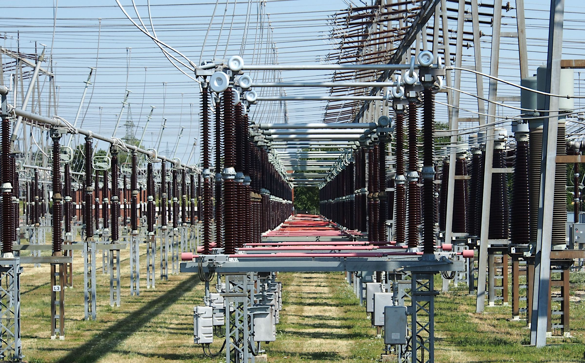
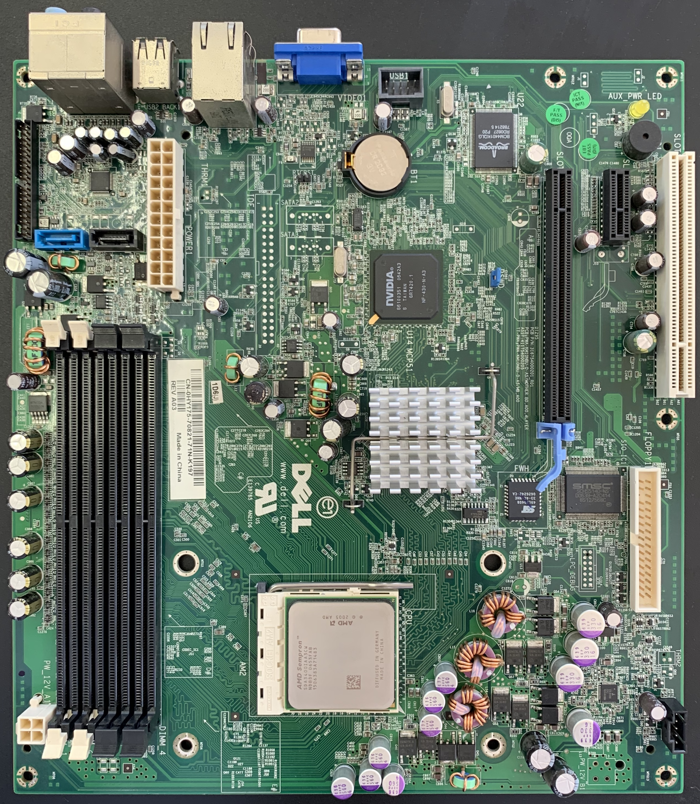
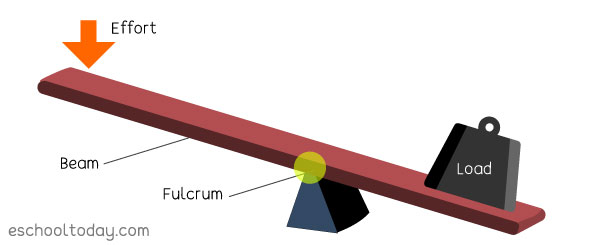
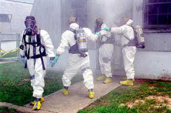

| Date |
Report |
Photo |
| Final Project Report |
For our final project, we were asked to write up a synopsis of what we learned and how we improved our
Spaghetti bridges over time: Our first design consisted of twenty spaghetti's lined up in a rod shape and
glued together. We came back a week later to find our design had been glued stuck to the cardboard it was
resting on. Separating the bridge from the cardboard proved difficult and we wound up breaking the bridge in
the process. For our second prototype, we decided to roll up the spaghetti's in a paper towel in order to
prevent the brigade from sticking to the cardboard. Although this did end up working, much of the paper towel
was stuck to the bridge and was inseparable. We later learned that this design could not be used on finals day
due to the paper towel which was not one of the materials allowed in the design. After a few more attempts and
design tweaks, we landed on a two-rod design with triangle supports between them. This proved successful at
not sticking to cardboard due to some preliminary precautions we took. The design later went on to perform
well. Some lessons we learned are how to distribute a load evenly across an object, how to ensure that our
design is not too complex, and how to tweak the design to ensure ease and possibility of construction. And as
our semester came to a close, we all learned valuable lessons about teamwork and engineering.
|

|
| Week Eighteen: 12/19/2022 |
We spent our Tuesday testing our final project together with the other engineering classes. Our bridge did
well and it was interesting to see how other designs performed. Some groups incorporated trusses and triangles
into their complex design while others relied more heavily on the wood glue in order to bear the weight of the
water. This week is the final week and marks the end of our first semester.
|

|
| Week Seventeen: 12/12/2022 |
Following up from last week, we are continuing our construction and testing of our spaghetti bridges. Some
designs held strong while having a bucket full of water hanging off of them. We thought about how and why some
designs performed better than others and incorporated their strategies into our prototypes. Our score is
graded based off of the weight of water it can support, divided by the weight of the bridge itself. This means
that we must consider the weight of our bride as well when constructing our final design.
|

|
| Week Sixteen: 12/5/2022 |
This week we are working on our design and creation of our final project for this semester. The Spaghetti
Bridge. We are allowed one hundred pieces of uncooked spaghetti and our final design must use no more than
twenty pieces. Four prototypes and one final bridge can be made in total. Throughout the week, we designed our
bridges using Tinkercad, went over the logistics, began construction, and even tested a few bridge designs to
see if they would function properly.
|

|
| Week Fifteen: 11/28/2022 |
Returning from Thanksgiving break, we are entering into the field of civil engineering, which, as we learned,
has many sub-categories of its own. Everything from building design, seismic and stress analysis on objects,
and even water management falls under this category.We were also briefed on our upcoming challenge and final
project. The following photo refers to a simulation game we played in class called Freeways. In the game, we
design a freeway and run simulations to test its efficiency.
|

|
| Week Fourteen: 11/14/2022 |
Continuing on the same note, we got more advanced and began constructing more advanced circuits. This is when
programming in Arduino's custom language came in. Using it, we were able to make the led's in the circuit
alternate and flash in any sequence we chose. Here in the picture, we were able to chain together many led's
of various colors and have them flashing in a set pattern we chose.
|

|
| Week Thirteen: 11/7/2022 |
Now we are going from theory to reality for our electrical engineering unit. We were each given a breadboard
and some transistors and resistors. We were tasked with creating both series and parallel circuits just like
we had done virtually last week. We measured the voltage, amperage, and resistance going through the circuit
and filled out a worksheet with the number we would measure. Those who completed the task early were given the
opportunity to walk around the classroom and teach the others how a circuit was properly constructed.
|

|
| Week Twelve: 10/31/2022 |
The next three weeks will be dedicated to one of the biggest fields in engineering; electrical engineering.
During the beginning of the week, we learned about electricity fundamentals such as voltage, amperage,
resistance and power through a presentation that the teacher gave us. Later on, we played around with and made
series and parallel circuits virtually in the Tinkercad software.
|

|
| Week Eleven: 10/24/2022 |
In our eleventh week, we are moving into the field of environmental engineering. We learned how water is
processed and treated at a facility in order to prevent damage to the environment. We learned that water
filtration is a multi-stage process involving various types of filters, temperatures, pressures, and
techniques. We then went on to build a water filter out of some given materials in order to filter some dirty
water that was provided by our teacher. Some designs worked better than others at filtering the dirty water
due to the order of the filtering materials that were put into the filter.
|

|
| Week Ten: 10/17/2022 |
During the week, we worked together on a water bottle rocket group project. First we had to do some research
and think up a game plan and any design tweaks. Later on, we began the construction of the rocket, working as
a group to make the process go smoothly. At the end of the week, we launched our rocket alongside the other
group's rockets. Unfortunately, however, our rocket was not able to launch due to a pressurization failure
caused by the lack of an airtite seal on the inside of the front cone. Regardless, we had fun and learned a
lot in the process.
|

|
| Week Nine: 10/10/2022 |
This week we worked on two projects, one called the flying paper challenge, and another project about a water
bottle rocket competition. In the flying paper challenge, we were tasked with creating a flying object using a
single sheet of paper and hit a trash can a distance away with it. It was fun and similar to our second
competition later on in the week. The water bottle rocket project had us create a rocket from a bottle that
would go as far as possible. The general design is due by the end of the week and the competition will start
early next week.
|
|
| Week Eight: 10/3/2022 |
Now we will be moving into our next area of engineering; bioengineering. Another presentation was given on the
topic today, going over prosthetics. Inspiration for prosthetics is usually inspired by nature and many
aspects of bioengineering are tied into the making of them. On Wednesday, we were tasked with researching and
creating a 3D model of a prosthetic for an animal of our choice. I went with a beak prosthetic for an Eagle
and my peers had interesting ideas as well.
|

|
| Week Seven: 9/26/2022 |
This week we are transitioning away from mechanical engineering, and into computer engineering. We listened to
multiple presentations on the topic and learned about the various parts of a computer and how they work
together. Later on in the week, we took apart and rebuilt a laptop. While opening up the computer, we were
tasked to identify the different components and fill out a worksheet with what we learned from the inspection.
|

|
| Week Six: 9/19/2022 |
Our Rube Goldberg construction machine is well on its way now. We have brought a custom lever from home due to
it being difficult to construct from cardboard and tape alone. Our design was rather simple yet consistent in
its results. Failing on our first attempt, the machine later went on to perform as intended after a few simple
tweaks to the design. Every group had an opportunity to test this week and many
|

|
| Week Five: 9/12/2022 |
This week we will begin construction on the Rube Goldberg Machine. Cutting up cardboard, taping down loose
pieces, and building the basic frame took place this week. We will soon be able to see the design go from the
digital form into a physical manifestation. Soon, hopefully, our design will be ready to be tested and tweaked
for optimal results.
|

|
| Week Four: 9/5/2022 |
Today we are working on our 3D models of our Rube Goldberg Machine. Among our four group members, one design
was chosen today in order to progress into the construction phase. Most build materials will be provided in
class. However, due to a shortage of supply, we have been advised to bring our own materials from home to be
safe.
|

|
| Week Three: 8/29/2022 |
This week we took a cursory overview of workplace safety and the various personal protective equipment used.
After that, we began brainstorming and sketching out our next project design; a Rube Goldberg Machine. A
minimum of three simple machines should be used in this project in order to receive full credit. For our group
project, we decided to go with a lever, an inclined plane, and a wheel and axle.
|

|
| Week Two: 8/22/2022 |
This week was the first week in which we started to get into engineering. We went over how to create and
program a website that will house all of our text updates and notes of what we learned. The website is to be
updated on a weekly basis and uploading photographs of our work is recommended. Throughout the year, we will
cover all of the various types of engineering and share on the website what we learned from group activities
and presentations.
|

|
| Week One: 8/15/2022 |
In our first week of the class, we did some icebreakers with the class. We took turns saying our names and
every other classmate's names in order. We did not get into any engineering during the first week; just
performing activities that helped the students get to know each other.
|

|